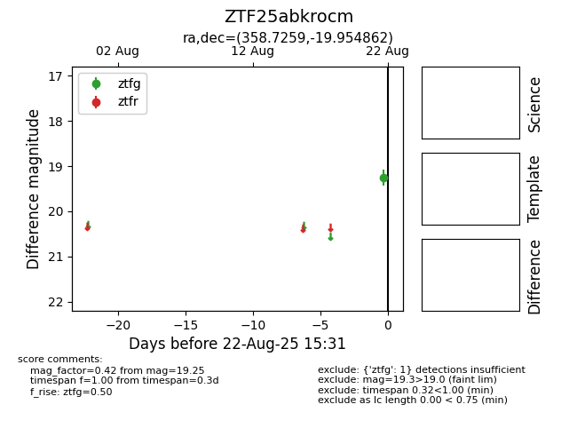

Target ZTF25abkrocm at 2025-08-22 16:16, see:
FINK: fink-portal.org/ZTF25abkrocm
Lasair: lasair-ztf.lsst.ac.uk/objects/ZTF25abkrocm
ALeRCE: alerce.online/object/ZTF25abkrocm
alt names
ZTF25abkrocm (ztf,alerce)
coordinates:
equatorial (ra, dec) = (358.7259,-19.95486)
galactic (l, b) = (58.9222,-75.20583)
photometry
last ztfg=19.25
1 ztfg detections
